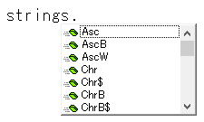
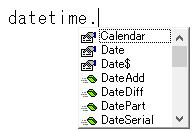

VBAの省略可能な記述について
VBAには、省略可能な記述が数多くあります。
省略可能な記述とは、書いても書かなくても動作に何の違いもないものになります。
初心者の方が覚え始める時には、多少混乱することもあると思います。
・省略できるものはなるべく省略して書く
・省略しない方が読みやすい場合は省略しない
書くか書かない迷ったときは、このような判断をしてください。
明瞭かつ簡潔で、わかり易く読みやすい方が良いに決まっています。
省略していると承知した上で、省略しても何も問題が無い場合は省略するという考えになります。
下記以外にもまだ有りますが、このくらいについて理解していれば十分でしょう。
変数の宣言
Option Explicit
この一文が自動挿入されます。
変数宣言をしない場合はエラーになります。
しかし、
Option Explicitが無ければ、変数は宣言しなくても問題なく動作します。
データ型指定においては意味をもちますが、勧められる使い方ではありません。
といいますか、
必ずOption Explicitを指定して、変数は必ず宣言するようにして下さい。
変数宣言のデータ型
Dim i As Long
これらは、どちらでも動作にほとんど違いはありません。
「ほとんど」と書きましたが、100%同じ動作というわけではありません。
例としては、
Ifステートメントで比較する場合に違いが発生する場合があります。
Sub test1()
Dim i
Dim j
i = 123
j = "123"
If i = j Then
MsgBox "同じ"
Else
MsgBox "違う"
End If
End Sub
この結果は、「違う」となります。
しかし、
変数iまたは変数jのどちらかでも、
Dim i As Long
このように宣言すると、「同じ」となります。
Dim i
これは、
Dim i As Variant
このように宣言したことと同じになります。
可能な限り、分かる範囲内でデータ型を指定するようにしましょう。
Dim sht As Worksheet
このようにオブジェクトの型を指定するものの事です。
WorksheetやWorkbook程度は直ぐに分かりますが、
オブジェクトの中にはオブジェクトの型が直ぐには分からない場合もあります。
特に、オブジェクトのプロパティで参照されるオブジェクト（子供のようなオブジェクト）の場合、
必ずしもプロパティ名と一致していない場合もあるため、正しいオブジェクトの型が分からない場合が出てきます。
オブジェクトの型が不明な場合は型を省略してVariantで構いません。
Application.ScreenUpdating = True : Application.DisplayAlerts = True
Application.ScreenUpdating = False
Application.DisplayAlerts = False
これらで、画面描画とアラートを止める指定をしている場合が多いです。
そこで、これらをTrueに戻さなくて良いのか、戻し忘れたらどうなるか・・・
結論としては、マクロの一連の動作が終了した時点で、自動的にTrueに戻ります。
従って、Trueに戻さなくても問題はありません。
※エラーでマクロが停止した場合はScreenUpdatingが戻らない場合があります。
なるべくTrueに戻した方が良いでしょう。
ScreenUpdating、DisplayAlerts以外にも、Applicationのプロパティでマクロ開始時点で変更している場合も多々あります。
Applicationのプロパティの中には、マクロ終了時点で元に戻らないものが多数あります。
Application.EnableEvents = False
Application.Calculation = xlCalculationManual
これらは、マクロが終了してももとには戻りません。
Application.ScreenUpdating = False
Application.DisplayAlerts = False
Application.EnableEvents = False
Application.Calculation = xlCalculationManual
このように記述しているとしたら、マクロ終了時の記述として、
Application.ScreenUpdating = True
Application.DisplayAlerts = True
Application.EnableEvents = True
Application.Calculation = xxlCalculationAutomatic
このように記述することが自然であり、
あえてScreenUpdatingとDisplayAlertsだけを記述しない理由は見当たりません。
ScreenUpdatingとDisplayAlertsだけしか使っていないとしても、
マクロ終了時の記述としてもとに戻すくせを付けておいた方がより良いと思います。
ただし、これは必須と言うほどのものではなく、書いておくに越したことはないという程度のものです。
Applicationのプロパティ
ActiveSheet
ThisWorkbook
これらは詳しくは、Applicationのプロパティになります。
つまり、
Application.ActiveCell
Application.ActiveSheet
Application.ThisWorkbook
これらのApplicationが省略された状態です。
さすがに、これらにApplicationを付けて書いているのはほとんど見かけません。
これらのApplicationは省略して書くべきでしょう。
※WorksheetFunction自体はClassですが、
ApplicationのWorksheetFunctionプロパティを経由して参照します。
このApplicationは省略できます。
書いても構いませんが、記述が長くなるので省略した方が見やすいと思います。
いきなり、ScreenUpdatingと書いてしまうとエラーとなります。
Applicationを省略できるプロパティと、省略できないプロパティについて
Applicationのプロパティで、ここに無いものはApplicationを省略できません。
Applicationのメソッド
グローバルに入っているものは、Applicationを省略できます。
SendKeys
Intersect
Union
これらは、グローバルに入っているので省略可能です。
ただしプロパティと違って、省略できるメソッドは極めて稀です。
上記の3つのメソッドについては良く使われるものですので、
Applicationを省略できることも結構知られているので省略して構わないでしょう。
少なくとも私は省略して書いています。
初心者の方とVBAを共有する場合は、Applicationを書いておいた方が無難かもしれません。
Range.Value
多くの場合は省略できるのですが、一部省略できない場合が存在します。
セルに値を入れるだけの記述なら、
Range("A1").Value = "abc"
Range("A1") = "abc"
これらに動作の違いはありませんので、
多くのセルに値を入れる場合は読みやすさを考えれば省略した方が良い場合も多いでしょう。
実際に私も、値を入れる場合は結構省略しています。
以下の参考ページを是非お読みください。
プロシージャーのCall
Call Subプロシージャー名
Call Functionプロシージャー名
これらは、Callを省略して、
Subプロシージャー名
Functionプロシージャー名
このように記述しても、動作に何らの違いもありません。
VBAを書いている人は、SubプロシージャーやFunctionプロシージャーの存在が分かっているので、
Callを書いても書かなくても、読んでいて違和感を感じないのですが、
他人がCallが省略されたVBAを読むと、一瞬「これは何？」というような感覚になる場合があります。
特に英語のプロシージャー名だと、ぱっと見た目では何者なのかが分かりづらい場合があるという事です。
メソッドのCall
例えば、
Range.AutoFilter Field:=1, Criteria1:="a"
これは、Callを付けて書くことが出来ます。
Call Range.AutoFilter(Field:=1, Criteria1:="a")
慣例には従った方が無難なので、このCallは省略して書いた方が良いでしょう。
Let
オブジェクト変数なら、
Set 変数 = オブジェクト
と書きますが、通常データの変数の場合は、
変数 = 値
と記述します。
これを省略せずに全て書くなら、
Let 変数 = 値
と書くことになります。
さすがにこれは書書ないほうが良いでしょう。
「Letを明示的に使用するかどうかは表記上の問題であり、通常は省略します。」
このように書かれています。
Next 変数
・・・
Next i
この
Next i のiは省略できます。
つまり、
For i = 1 To 10
・・・
Next
これでよいという事です。
この場合、Nextの後ろに書くとしたらi以外は書くことが出来ません。
つまり、iと書くか、iを省略するかという選択になります。
For i = 1 To 10ここまで書いてEnterすると、Nextが自動挿入されます。
Next iではなくNextが自動挿入されます。
つまりこれは、Microsoftがこのiは不要だといっていると判断して構わないはずです。
ネストの読みやすさを議論するなら、ただしくインデントすべきであって、これ以上の読みやすさ対策はありえません。
むしろ省略した方が良いと考えます。
Step 1
For i = 1 To 10 Step 1
これらは全く同一のものになります。
ForのStepをし省略した場合は、Step 1となります。
このStep 1をわざわざ書く人は稀でしょう。
引数が無い場合の()
変数 = Now()
どちらでも構いません。
この括弧を書くかどうかは、個人の好みでしょう。
Do While 変数 <> ""
・・・
変数 = Dir()
Loop
この、
変数 = Dir()
これは、
変数 = Dir
このように()を省略することが出来ます。
しかし、Dirの引数を省略した場合は次のファイル名を取得するという仕様を考えたとき、
引数が省略されていることを見た目でわかり易いように伝えるとすれば、括弧を書いた方が良いでしょう。
名前付き引数
この、Field:=やCriteria1:=を名前付き引数と呼びます。
これらの名前付き引数を省略して、
Range("A1:C10").AutoFilter 1, "a"
このように書いても、動作に何の支障もありません。
また、後でVBAコードを読んだときに、引数の意味が分からなくなってしまう事にもなりかねません。
VBA関数の引数には、名前付き引数を省略して書く
メソッドの引数には、名前付き引数を指定して書く
このような使われ方をしている場合が多いので、それに従っておいた方が無難でしょう。
メソッドの引数は数が多い場合があり、引数を覚えていない人の方が多いという事が最大の理由でしょう。
メソッドの規定値
これは、
Range("A1:C10").Sort Key1:=Range("A1")
このように、ソート順を指定しなくても動作に問題はありません。
Order1の規定値が、xlAscendingなので省略しても良いという事になります。
このOrder1の規定値がxlAscendingだと知っている人ばかりではないという事を考えれば、
ここは引数を省略せずに、Order1:=xlAscendingと書いておいた方が良いでしょう。
組み込み列挙
この、xlContinuousの列挙を省略せずに書くと、
Range("A1").Borders.LineStyle = XlLineStyle.xlContinuous
このようになります。
列挙の記述では、省略しない場合は、
列挙.メンバー
と記述することになります。
グローバルに入っているものは、列挙のメンバーをいきなり書くことが出来ます。
一般的には、列挙のメンバーをいきなり書いている方が多いでしょう。
列挙のメンバーを調べる手段として、自動記録かネット検索になると思いますが、
どちらも、列挙のメンバーをいきなり書いている場合がほとんどになるからです。
つまり、省略した書き方しか知らない人が多数だという事です。
XlLineStyle.xlContinuous
このように書いておくと、後々線種を変更したい時にはインテリセンスが使えるので記述が楽になります。
関数のモジュール名
文字列系関数（Mid,Right等々）は、
Stringsと言うモジュールに含まれています。
つまり、
Strings.Mid
省略しなければ、このように書くという事になります。

DateTimeモジュールに含まれています。

関数のモジュール名については、むしろ知っている人の方が少ないので、
モジュール名が書かれているVBAコードにお目にかかることはかなり稀になると思います。
コレクションのItem
Worksheets.Item(1)
後者の書き方を見かけることは滅多にありませんが、
この二つは、全く同じものになります。
Workbooks等、他のコレクションでも同じ書き方が存在します。
VBAで扱うコレクションの多くでは、既定のプロパティとしてItemプロパティを持っています。
既定のプロパティとは、プロパティを省略した場合に適用されるプロパティという事になります。
従って、Itemを省略してもItemが指定されているものとされるという事になります。
MsgBox Range("A1:C10")(5).Address
この二つは同じ動作となり、結果は「$B$2」となります。
MsgBox ActiveSheet.UsedRange(5).Address
前者は正しく動作しますが、後者は「不正なプロパティ」となります。
しかし、
Dim rng As Range
Set rng = ActiveSheet.UsedRange
MsgBox rng.Item(5).Address
MsgBox rng(5).Address
これなら、どちらも正しく動作します。
無条件かつ単純にItemを省略できるわけではありませんので、
Rangeオブジェクトの場合はItemを省略しない方が良いでしょう。
VBAの省略可能な記述の最後に
従って、省略せずに全てを書くとすれば、
ステートメントと変数以外はApplicationまたはモジュール名から書き始めることになります。
しかし、これでは記述が長くなってしまい読みづらいコードになってしまいます。
ゆくゆくは、他人にも読みやすいVBAコードを書くようにすると良いでしょう。
同じテーマ「マクロVBA技術解説」の記事
手動計算時の注意点と再計算方法
VBAの用語について：ステートメントとは
オブジェクト変数とは何か
VBAの小数以下の演算誤差について
スピルでVBAの何が変わったか
CharactersプロパティとCharactersオブジェクト
ユーザーに絶対に停止させたくない場合のVBA設定
印刷範囲の設定・印刷範囲のクリア
VBAの省略可能な記述について
VBAのVariant型について
VBAのインデントについて
新着記事NEW ・・・新着記事一覧を見る
VBA100本ノック 100本目：WEBから100本ノックのリストを取得｜VBA練習問題（3月3日）
VBA100本ノック 99本目：自動席替え（行列と前後左右が全て違うように）｜VBA練習問題（3月2日）
VBA100本ノック 98本目：席替えルールが守られているか確認｜VBA練習問題（3月1日）
VBA100本ノック 97本目：Accessデータを取得（グループ集計）｜VBA練習問題（2月27日）
VBA100本ノック 96本目：Accessデータを取得（マスタ結合&抽出）｜VBA練習問題（2月26日）
VBA100本ノック 95本目：図形のテキストを検索するフォーム作成｜VBA練習問題（2月24日）
VBA100本ノック 94本目：表範囲からHTMLのtableタグを作成｜VBA練習問題（2月23日）
VBA100本ノック 93本目：複数ブックを連結して再分割｜VBA練習問題（2月22日）
VBA100本ノック 92本目：セルの色を16進で返す関数｜VBA練習問題（2月20日）
VBA100本ノック 91本目：時間計算（残業時間の月間合計）｜VBA練習問題（2月19日）
アクセスランキング ・・・ ランキング一覧を見る
1.最終行の取得（End,Rows.Count）｜VBA入門
2.RangeとCellsの使い方｜VBA入門
3.変数宣言のDimとデータ型｜VBA入門
4.マクロって何？VBAって何？｜VBA入門
5.Range以外の指定方法（Cells,Rows,Columns）｜VBA入門
6.セルのコピー&値の貼り付け（PasteSpecial）｜VBA入門
7.繰り返し処理（For Next)｜VBA入門
8.セルに文字を入れるとは（Range,Value）｜VBA入門
9.マクロはどこに書くの（VBEの起動）｜VBA入門
10.とにかく書いてみよう（Sub,End Sub）｜VBA入門
- ホーム
- マクロVBA応用編
- マクロVBA技術解説
- VBAの省略可能な記述について
このサイトがお役に立ちましたら「シェア」「Bookmark」をお願いいたします。
記述には細心の注意をしたつもりですが、
間違いやご指摘がありましたら、「お問い合わせ」からお知らせいただけると幸いです。
掲載のVBAコードは動作を保証するものではなく、あくまでVBA学習のサンプルとして掲載しています。
掲載のVBAコードは自己責任でご使用ください。万一データ破損等の損害が発生しても責任は負いません。